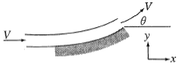
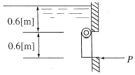
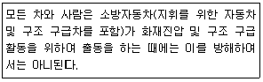
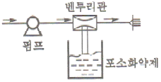
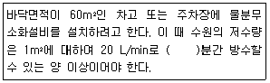

소방설비산업기사(기계) (2014-03-02 기출문제)
1과목: 소방원론
1. 건축물의 방화계획에서 공간적 대응에 해당하지 않는 것은?
- 특별피난계단
- 옥내소화전설비
- 직통계단
- 방화구획
(정답률: 77%)

2. 다음 중 인화점이 가장 낮은 물질은?
- 등유
- 아세톤
- 경유
- 아세트산
(정답률: 75%)
3. 화재시 연소물의 온도를 일정 온도 이하로 낮추어 소화하는 방법은?
- 질식소화
- 냉각소화
- 제거소화
- 희석소화
(정답률: 85%)
4. 대체 소화약제의 물리적 특성을 나타내는 용어 중 지구 온난화지수를 나타내는 약어는?
- ODP
- GWP
- LOAEL
- NOAEL
(정답률: 67%)
5. 위험물안전관리법령에서 정한 제5류 위험물의 대표적인 성질에 해당하는 것은?
- 산화성
- 자연발화성
- 자기반응성
- 가연성
(정답률: 81%)
6. Halon 1301에서 숫자 0은 무슨 원소가 없다는 것을 뜻 하는가?
- 탄소
- 브롬
- 불소
- 염소
(정답률: 81%)
7. 분말소화약제의 주성분인 탄산수소나트륨이 열과 반응하여 생기는 가스는?
- 일산화탄소
- 수소
- 이산화탄소
- 질소
(정답률: 59%)
8. 연소의 3대 요소가 아닌 것은?
- 열
- 산소
- 연료
- 습도
(정답률: 82%)
9. 물의 소화효과를 가장 옳게 나열한 것은?
- 냉각효과, 촉매효과
- 질식효과, 촉매효과
- 냉각효과, 질식효과
- 냉각효과, 질식효과, 촉매효과
(정답률: 85%)
10. 기체상태의 Halon 1301은 공기보다 약 몇 배 무거운가? (단 공기는 79%의 질소, 21%의 산소로만 구성되어 있다.)
- 4.⑤배
- 5.17배
- 6.12배
- 7.01배
(정답률: 62%)
11. 화씨온도 122℉는 섭씨온도 몇 ℃인가?
- 40
- 50
- 60
- 70
(정답률: 83%)
12. 공기 중 위험도 값(H)이 가장 작은 것은?
- 디에틸에테르
- 수소
- 에틸렌
- 프로판
(정답률: 50%)
13. 하론1301 소화약제와 이산화탄소 소화약제는 소화기에 충전되어 있을 때 어떤 상태로 보존되고 있는가?
- 하론1301 : 기체, 이산화탄소 : 고체
- 하론1301 : 기체, 이산화탄소 : 기체
- 하론1301 : 액체, 이산화탄소 : 기체
- 하론1301 : 액체, 이산화탄소 : 액체가스계 소화약제
(정답률: 58%)
14. 다음 중 증기비중이 가장 큰 물질은?
- CH4
- CO
- C6H6
- SO2
(정답률: 81%)
15. 용기 내 경유가 연소하는 형태는?
- 증발연소
- 자기연소
- 표면연소
- 훈소연소
(정답률: 71%)
16. 다음 중 위험물안전관리법령상 산화성고체 위험물에 해당하지 않는 것은?
- 과염소산
- 질산칼륨
- 아염소산나트륨
- 과산화바륨
(정답률: 55%)
17. 다음 중 할로겐화합물 소화약제를 청정소화약제로 대체 하는 주된 이유로 가장 올바른 것은?
- 화재 후 잔재의 처리가 쉽다.
- 오존층의 파괴효과가 적다.
- 냄새가 거의 없다.
- 화재를 초기에 진압하기 쉽다.
(정답률: 73%)
18. 일반적인 소방대상물에 따른 화재의 분류로 적합하지않은 것은?
- 일반화재 : A급
- 유류화재 : B급
- 전기화재 : C급
- 특수가연물화재 : D급
(정답률: 85%)
19. 위험물안전관리법상 제4류 위험물의 일반적인 특성이 아닌 것은?
- 인화가 용이한 액체이다.
- 대부분의 증기는 공기보다 가볍다.
- 물보다 가볍고 물에 녹지 않는 것이 많다.
- 대부분 유기화합물질이다.
(정답률: 66%)
20. 보통 화재에서 눈부신 백색(회백색) 불꽃의 온도는 몇℃ 정도인가?
- 600℃
- 900℃
- 1200℃
- 1500℃
(정답률: 76%)
2과목: 소방유체역학
21. 깃(Vane)에 수평으로 유입된 물제트 각도 θ만큼 방향이 변하여 유출될 때 깃이 받는 수직방향(Vertical Direction) 힘이 최대가 되는 θ는 얼마인가? (단, 중력과 마찰효과는 무시한다.)

- 30°
- 45°
- 60°
- 90°
(정답률: 71%)
22. 그림에서 수문이 열리지 않도록 하기 위하여 수문의 하단에 받쳐 주어야 할 최소 힘 P는 약 몇[N]인가? (단, 수문의 폭은 1[m]이다)

- 2,640
- 2,940
- 3,540
- 5,340
(정답률: 40%)
23. 이상기체의 정압변화를 나타내는 것은? (단, P : 압력, V : 부피, T : 온도, k : 비열비)
- PVk=일정
- PV=일정
- V/T=일정
- P/T=일정
(정답률: 60%)
24. 액면으로부터 40 m인 지점의 계기압력이 515.8 kPa일 때 이 액체의 비중량은 약 몇 kN/m3인가?
- 11.8
- 12.9
- 14.2
- 16.4
(정답률: 68%)
25. 대기에 노출된 상태로 저장 중인 20[℃]의 소화용수 500[kg]을 연소 중인 가연물에 분사하는 경우 소화용수가 증발하면서 흡수한 열량은 몇 [MJ]인가? (단, 물의 비열은 4.2[kJ/kgㆍ℃], 기화열은 2,250[kJ/kg]이다)
- 2.59
- 168
- 1,125
- 1,293
(정답률: 43%)
26. 압력계가 1,275 kPa 을 지시하고 있다. 이것을 액체가 물인 수두로 나타내면 약 몇 m인가?
- 13
- 15
- 130
- 150
(정답률: 63%)
27. 동점성계수가 6×10-5 m2/s인 유체가 0.4 m3/s의 유량으로 원관에 흐르고 있다. 하임계 레이놀즈수가 2,100일 때 층류로 흐를 수 있는 관의 최소 지름은 약 몇 m인가?
- 1.01
- 2.02
- 4.⑤
- 6.06
(정답률: 56%)
28. 물이 흐르는 관로 상에 피토관을 설치하고 전압과 정압의 단자를 수은이 든 U자관의 양측에 연결하였더니 측정되는 수은의 높이 차가 49.6 mm이었다. 이 위치에서의 유속은 약 몇 m/s인가? (단, 수은의 비중은 13.6이고 U자관 내 물도 고려한다.)
- 2.47
- 3.50
- 3.84
- 11.12
(정답률: 39%)
29. 소화용 펌프를 유량 1.5[m3/min], 양정 60[m], 회전수 1,770[rpm]으로 설정하였으나 공장배치가 변경되어 양정이 90[m]가 필요하게 되었다. 이 펌프를 몇 [rpm]으로 운전하면 변경된 양정에 거의 같은 효율로 운전할 수 있는가?
- 2,073
- 2,168
- 2,230
- 2,655
(정답률: 44%)
30. 유체의 연속방정식에 대한 설명으로 가장 적절한 것은?
- 뉴턴의 운동법칙을 만족시키는 방정식
- 일과 에너지의 관계를 나타내는 방정식
- 유선에 따른 오일러방정식을 적분한 방정식
- 질량보존의 법칙을 유체 유동에 적용한 방정식
(정답률: 58%)
31. 이상유체를 가장 잘 표현한 것은?
- 과열유체
- 비점성, 압축성 유체
- 점성, 비압축성 유체
- 비점성, 비압축성 유체
(정답률: 75%)
32. 계기압력이 1.2[MPa]이고, 대기압이 96[kPa]일 때 절대압력은 몇 [kPa]인가?
- 108
- 1,104
- 1,200
- 1,296
(정답률: 56%)
33. 안지름이 30[cm], 길이가 800[m]인 관로를 통하여 0.3[m3/s]의 물을 50[m] 높이까지 양수하는 데 있어 펌프에 필요한 동력은 몇 [kW]인가? (단, 관마찰계수는 0.03이고, 펌프의 효율은 85[%]이다)
- 402
- 409
- 415
- 427
(정답률: 41%)
34. 텅스텐, 백금 또는 백금-이리듐 등을 전기적으로 가열하고 통과 풍량과 따른 열교환 양으로 속도를 측정하는 유속계는 어느 것인가?
- 열선 풍속계
- 도플러 풍속계
- 컵형 풍속계
- 포토디텍터 풍속계
(정답률: 74%)
35. 소방차에 설치되어 있는 물탱크에 소화수원으로 2 m3이 채워진 상태로 화재현장에 출동하여 구경이 21 mm인 노즐을 사용하여 294.2 kPa의 방수압력으로 방사할 경우 물탱크 내의 소화수원이 완전히 소모되는 데 약 몇 분이 소요되겠는가?
- 4
- 5
- 7
- 8
(정답률: 29%)
36. 날카로운 모서리를 갖는 파이프 입구영역에서 부차적 손실계수가 0.5이고 평균 유속이 3[m/s]라면 입구 손실수두는 몇 [m]인가?
- 0.0235
- 0.230
- 2.25
- 230
(정답률: 56%)
37. 안지름 50[mm]의 원관에 기름이 2.5[m/s]의 평균속도로 흐를 때 관마찰계수는 얼마인가? (단, 기름의 동점성계수는 1.31×10-4[m2/s]이다)
- 0.013
- 0.067
- 0.125
- 0.954
(정답률: 62%)
38. 냉장고의 내부는 한 변이 2[m]인 정육면체이며 밑바닥은 완전히 단열되어 있다. 안쪽과 바깥 표면온도가 각각 -20[℃]와 40[℃]일 때 열 부하를 6,000[W] 이하로 유지하기 위하여 윗면 및 측면에 사용되는 스티로폼 단열재의 최소 두께는 몇 [cm]인가? (단, 스티로폼 단열재의 열전도율은 0.03[W/mㆍK]이다)
- 2
- 4
- 6
- 8
(정답률: 35%)
39. 정지되어 있는 2개의 평행평판 사이의 유체가 한쪽의 평판이 3[m/s]로 운동하여 유동이 발생하는 경우에 유체내의 전단응력은 몇 [Pa]인가? (단, 유체의 점성계수는 0.29[kg/mㆍs]이고, 평판 사이의 높이는 2[cm]이고, 속도분포는 선형이다)
- 19.5
- 20.7
- 43.5
- 180.7
(정답률: 47%)
40. 온도가 45[℃]인 CO2가스 2.3[kg]이 체적 0.283[m3]인 용기에 가득 차 있다. 이 가스의 압력은 몇 [kPa]인가? (단, 이산화탄소의 기체상수는 0.1889[kJ/kgㆍK]이다)
- 488
- 536
- 635
- 797
(정답률: 47%)
3과목: 소방관계법규
41. 점포에서 위험물을 용기에 담아 판매하기 위하여 지정수량의 40배 이하의 위험물을 취급하는 장소는?
- 일반취급소
- 주유취급소
- 판매취급소
- 이송취급소
(정답률: 77%)
42. 화재, 재난ㆍ재해 그 밖의 위급한 상황이 발생한 현장에 소방활동구역을 정하여 그 구역에 출입할 수 있는 사람을 제한하도록 경찰공무원에게 요청할 수 있는 사람은?
- 소방대장
- 시ㆍ도지사
- 시장 군수
- 행정자치부장관
(정답률: 74%)
43. 도급받은 소방시설공사의 일부를 제3자에게 하도급 할 수 있는 횟수는?
- 1회
- 2회
- 3회
- 무제한
(정답률: 56%)
44. 물분무등소화설비를 반드시 설치하여야 하는 특정 소방대상물이 아닌 것은?
- 항공기 격납고
- 연면적 600 m2 이상인 주차용 건축물
- 바닥면적 300 m2 이상인 전산실
- 20대 이상의 차량을 주차할 수 있는 기계식주차장치
(정답률: 45%)
45. 산화성고체이며 제1류 위험물에 해당하는 것은?
- 황화린
- 칼륨
- 유기과산화물
- 염소산염류
(정답률: 77%)
46. 다음과 같이 화재진압의 출동을 방해한 사람에 대한 벌칙은?(2022년 2월 관련규정 확인후 문제 보기 변경 적용함)

- 3백만원 이하의 벌금
- 3년 이하의 징역 또는 1천5백만원 이하의 벌금
- 5년 이하의 징역 또는 5천만원 이하의 벌금
- 10년이하의 징역 또는 5천만원 이하의 벌금
(정답률: 55%)
47. 소방용수시설의 설치기준에서 급수탑 개폐밸브의 지상으로부터 설치 높이는?
- 1.5 m 이상 1.7 m 이하의 위치에 설치
- 1.5 m 이상 2.0 m 이하의 위치에 설치
- 2.0 m 이상 2.5 m 이하의 위치에 설치
- 2.0 m 이상 3.0 m 이하의 위치에 설치
(정답률: 71%)
48. 소방안전교육사를 배치하지 않아도 되는 곳은?
- 소방청
- 한국소방안전협회
- 소방체험관
- 한국소방산업기술원
(정답률: 55%)
49. 소방관계법에서 건축허가 등의 동의에 관한 설명으로 옳지 않은 것은?
- 사용승인에 대한 동의를 할 때에는 소방시설공사의 완공 검사증명서를 교부한 것으로는 동의를 갈음할 수 없다.
- 건축허가등을 할 때에 소방본부장이나 소방서장의 동의를 받아야 하는 건축물 등의 범위는 대통령령으로 정한다.
- 건축허가 등의 권한이 있는 행정기관은 건축허가 등을 할 때는 머리 그 건축물 등의 시공지 또는 소재지 관할하는 본부장 또는 소방서장의 동의를 받아야 한다.
- 용도변경 신고를 수리할 권한이 있는 행정기관은 그 신고의 수리를 한 때에는 그 건축물 등이 시공지 또는 소재지를 관할하는 소방본부장 또는 소방서장에게 지체 없이 그 사실은 알려야 한다.
(정답률: 53%)
50. 제조소등의 위치ㆍ구조 또는 설비를 변경없이 당해 제조소 등에서 저장하거나 취급하는 위험물을 품명ㆍ수량 또는 지정수량의 배수를 변경하고자 하는 자는 변경하고자 하는 날의 며칠 전까지 행정안전부령이 정하는 바에 따라 시ㆍ도지사 에게 신고하여야 하는가?
- 1일
- 3일
- 5일
- 7일
(정답률: 35%)
51. 특정소방대상물의 관계인 등이 점검을 한 경우에는 관계인이 그 점검 결과를 누구에게 보고하여야 하는가?
- 소방청장
- 시ㆍ도지사
- 한국소방안전협회장
- 소방본부장 또는 소방서장
(정답률: 64%)
52. 소방시설공사업자는 소방시설착공신고서의 중요한 사항이 변경된 경우에는 해당 서류를 첨부하여 변경일로부터 며칠 이내에 소방본부장 또는 소방서장에게 신고하여야 하는가?
- 7일
- 15일
- 21일
- 30일
(정답률: 50%)
53. 화재 예방조치 등을 위한 옮긴 위험물 또는 물건의 보관 기간은 규정에 따라 소방본부나 소방서의 게시판에 공고한 후 어느 기간까지 보관하여야 하는가?
- 공고기간 종료일 다음 날부터 5일
- 공고기간 종료일 다음 날부터 7일
- 공기기간 종료일부터 10일
- 공고기간 종료일부터 14일
(정답률: 57%)
54. 화재안전기준을 달리 작용하여야 하는 특수한 용도 또는 구조를 가진 특정소방대상물 중 원자력발전소, 핵폐기물 처리시설 등에 설치하지 않아도 되는 소방시설로서 옳은 것은?
- 옥내소화전설비 및 소화용수설비
- 옥내소화전설비 및 옥외소화전설비
- 스프링클러설비 및 물분무등 소화설비
- 연결송수관설비 및 연결살수설비
(정답률: 81%)
55. 소방안전관리 업무를 수행하지 아니한 특정 소방대상물의 관계인에 대한 벌칙 기준은?
- 200만원 이하의 과태료
- 100만원 이하의 벌금
- 300만원 이하의 과태료
- 500만원 이하의 벌금
(정답률: 42%)
56. 소방안전관리대상물의 관계인은 특정소방대상물의 근무자 및 거주지에 대한 소방훈련과 교육을 실시하였을 때에는 그 실시 결과를 소방훈련ㆍ교육실시 결과 기록부에 기록하고, 이를 몇 년간 보관하여야 하는가?
- 1년
- 2년
- 3년
- 5년
(정답률: 77%)
57. 소방관련법에 의한 자동화재속보설비를 반드시 설치하여야 하는 특정소방대상물로 거리가 먼 것은?
- 10층 이하의 숙박시설
- 국보로 지정된 목조 건축물
- 노유자 생활시설
- 바닥면적 500 m2 이상의 층이 있는 수련시설
(정답률: 44%)
58. 소방특별조사 결과에 따른 조치명령으로 손실을 입어 손실을 보상하는 경우 그 손실을 입은 자는 누구와 손실 보상을 협의하여야 하는가?
- 소방서장
- 시ㆍ도지사
- 소방본부장
- 행정안전부장관
(정답률: 79%)
59. 소방관계법에 의한 무창층의 정의에서 지상층 중 개구부 면적의 합계가 해당 층 바닥면적의 1/30 이하가 되는 층을 말하는데, 여기서 말하는 개구부의 요건으로 틀린 것은?
- 크기는 지름 50 ㎝ 이상의 원이 내접할 수 있는 크기일 것
- 도로 또는 차량이 진입할 수 있는 빈터를 향할 것
- 해당 층의 바닥면으로부터 개구부 밑부분까지 높이가 1.5 m 이내일 것
- 화재 시 건축물로부터 쉽게 피난할 수 있도록 창살이나 그 밖의 장애물이 설치되지 아니할 것
(정답률: 58%)
60. 2급 소방안전관리대상물의 소방안전관리자로 선임할 수 있는 사람으로 옳지 않은 것은?
- 산업안전기사 자격을 가진 사람
- 건설기계기사 자격을 기진 사람
- 소방공무원으로 3년 이상 근무한 경력이 있는 사람
- 의용소방대원으로 3년 이상 근무한 경력이 있는 사람
(정답률: 63%)
4과목: 소방기계시설의 구조 및 원리
61. 스프링클러설비에서 교차배관은 가지배관 밑에 수평으로 설치한다. 교차배관의 구경은 적어도 몇 밀리미터 이상이어야 하는가?
- 13
- 25
- 32
- 40
(정답률: 68%)
62. 포소화약제 혼합장치 중 아래 그림은 어느 방식에 맞는 것인가?

- Line proportioner 방식
- Pump proportioner 방식
- Pressure Proportioner 방식
- Pressure side proportioner 방식
(정답률: 73%)
63. 제연설비의 배출풍도에 사용되는 강판은 두께가 몇 [mm]부터 사용할 수 있는가?
- 0.2[mm]
- 0.5[mm]
- 0.8[mm]
- 1.0[mm]
(정답률: 72%)
64. 다음( )안에 적당한 것은?

- 10
- 12
- 20
- 30
(정답률: 74%)
65. 상수도소화용수 설치시 소방대상물의 소화전 설치기준에 맞는 것은?
- 수평투영 반경의 각 부분으로 부터 140 m 이내마다
- 수평투영 면의 각 부분으로 부터 140 m 이내마다
- 수평투영 면적의 각 부분으로 부터 140 m 이내마다
- 수평투시도의 각 부분으로 부터 140 m 이내마다
(정답률: 66%)
66. 습식 스프링클러 설비의 구성요소가 아닌 것은?
- 유수검지장치
- 압력스위치
- 엑셀레이터
- 리타딩챔버
(정답률: 66%)
67. 옥외소화전설비의 유량측정장치는 펌프 정격토출량의 몇 %까지 측정할 수 있어야 하는가?
- 140
- 150
- 175
- 185
(정답률: 60%)
68. 피난로의 급기가압에 의한 제연방식에서 예상되는 문제점과 거리가 가장 먼 것은?
- 전실 등의 문이 열려져 있으면 가압제연이 곤란하다.
- 누설된 공기가 화재실로 인입되면 화세가 거세진다.
- 공기가 누설될 수 있는 실의 틈새 등의 산정에 변수가 많으며, 계산된 면적도 실제 상황과의 차이를 예상할 수 있다.
- 급기가압하는 공기량은 최대한 크게 해야 한다.
(정답률: 70%)
69. 가압송수장치의 펌프가 작동하고 있으나 포헤드에서 포가 방출되지 않는 경우의 원인으로서 관계가 적은 것은?
- 포헤드가 막혀 있다.
- 배관이 막혀있다.
- 제어밸브 및 자동밸브가 열리지 않는다.
- 전기계통의 접속 불량이 있다.
(정답률: 72%)
70. 그림과 같이 어느 고층건물에 시설된 연결송수관의 체크밸브와 소방대 연결송수구간에 자동배수(auto drip) 장치가 설치되어 있다. 이 장치는 모든 소방대상물의 연결송수관에 거의 필수적인 것이다. 이 장치에 관한 설명으로서 옳은 것은?
- 외부로부터 송수구를 통해 투입되는 이물질에 의해 체크밸브와 송수구간의 배관이 막혀있는지 여부를 이 장치에 의해 점검할 수 있다.
- 이 장치는 화재시 소방펌프차로부터 급수될 때의 수격 을 완화시켜 주기 위한 것이다.
- 체크밸브와 송수구 사이에 잔류될 수도 있는 물이 저절로 배수되는 장치이다.
- 이 장치는 배관내부에 대한 정기적인 통수소제를 위한 것이다.
(정답률: 60%)
71. 어느 밀폐된 실내에 이산화탄소를 방출시켜 실내의 산소농도(체적율)를 14%까지 저하시켰다고 할 때 그 속에 차지하는 이산화탄소의 농도(체적율)는 몇 %가 될 것인가?
- 21%
- 28%
- 33.3%
- 40%
(정답률: 69%)
72. 완강기의 속도 조절기에 관한 기술 중 옳지 않는 것은?
- 견고하고 내구성이 있어야 한다.
- 강하시 발생하는 열에 의해 기능에 이상이 생기지 아니하여야 한다.
- 모래 등 이물질이 들어가지 않도록 견고한 커버로 덮어져야 한다.
- 평상시에는 분해 , 청소 등을 하기 쉽게 만들어져 있어야 한다.
(정답률: 76%)
73. 물분무소화설비의 화재안전기준에서 물분무소화설비를 한 차고, 주차장에 있어서 수원은 그 저수량이 바닥면적 1 m2에 대하여 몇 L/min으로 20분간 방수할 수 있는 양 이상으로 하여야 하는가?
- 10 L/min
- 20 L/min
- 30 L/min
- 40 L/min
(정답률: 65%)
74. 수계소화설비의 가압송수장치인 압력수조의 설치부속물이 아닌 것은?
- 수위계
- 물올림 장치
- 자동식 에어 콤푸레샤
- 맨홀
(정답률: 41%)
75. 제연설비 배출기의 흡입측 풍도안의 풍속으로 옳은 것은?
- 15 m/s 이하
- 18 m/s 이하
- 20 m/s 이하
- 25 m/s 이하
(정답률: 49%)
76. 이산화탄소 소화설비의 선택밸브에 대한 설명으로 가장 부적합한 것은?
- 선택밸브는 반드시 수동으로 개방하여야 한다.
- 선택밸브는 방호구역을 선택하기 위한 밸브이다.
- 선택밸브는 방호구역마다 설치하여야 한다.
- 선택밸브에는 담당 방호구역을 나타내는 표시를 하여야 한다.
(정답률: 62%)
77. 분말소화약제의 저장용기에는 저장용기의 내부압력이 설정압력이 되었을 때 주밸브를 개방하는 장치가 필요하다. 이 장치의 명칭은?
- 자동폐쇄장치
- 전자개방장치
- 자동청소장치
- 정압작동장치
(정답률: 81%)
78. 다음의 소화기 압력원 및 방사방식을 설명한 내용 중 적합하다고 볼 수 없는 것은 어느 것인가?
- 이산화탄소 소화기는 자압식이다.
- 분말 소화기는 가압식과 축압식이 있다.
- 산알칼리 소화기는 전도식과 파병식이 있다.
- 할로겐 화합물 소화기는 모두 자압식(自壓式)이다.
(정답률: 60%)
79. 소화기 설치 장소로서 적당하지 않은 것은?
- 보기 싫으므로 눈에 잘 뜨이지 않는 곳에 둔다.
- 습기가 많지 않은 곳에 둔다.
- 통행 및 작업에 방해가 되지 않는 곳에 둔다.
- 바닥으로부터 높이 1.5 m 이하의 곳에 비치한다.
(정답률: 80%)
80. 고정식 분말소화약제 공급장치에 배관 및 분사헤드를 설치하여 화재 발생부분에만 집중적으로 소화약제를 방출하도록 설치하는 방식은?
- 전역방출방식
- 국소방출방식
- 이동식 방출방식
- 탱크사이드방식
(정답률: 75%)